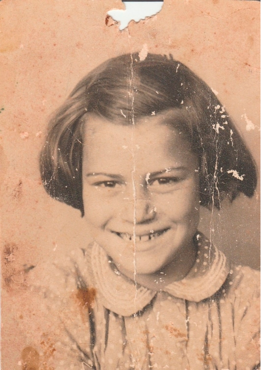

restauración de una fotografía antigua, se realizo mediante las herramientas de corrección de photoshop
tales como el tapón de clonar, los correctores puntuales y el rellenado según el contenido para las
zonas mas dañadas que tenian la misma textura. Luego de la restauración se utilizo una inteligencia
artificial para poder darle un color mas fiable a la foto original.
esta es una portada creada para un fotofestival, se utilizó una tipografia con mucho peso para poder
crear una mascara de recorte con la fotografía inicial.
imagen creada para el zoo de londres, aplicando las tecnicas de mascara de recorte.
en este ejercicio tuvimos que utilizar la herramienta pluma para poder vectorizar la imagen del gato,
tambien se cambio la trama del fondo.
Personal
23 años (20/01/1998), nací en Buenos aires, Argentina en la localidad de La Matanza.
Habilidades
técnico personal y profesional en informática, actualmente estudiando diseño ux/ui en digitalers.
Hobbies
tengo como hobbie la fotografia y la edicián de contenido audiovisual.